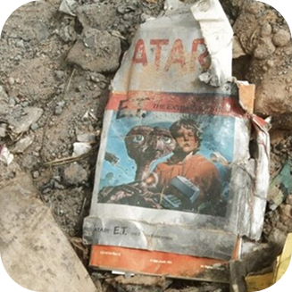

Os games, que um dia foram sinônimo de diversão, conexão e inovação, podem estar vivendo seu maior colapso. Com o aumento de jogos mal otimizados, microtransações abusivas, a queda da qualidade e o cansaço da comunidade, a indústria enfrenta uma crise como nunca antes. O que era um hobby para milhões, agora se tornou um ciclo de promessas vazias, e muitos jogadores se perguntam: será que os games ainda têm futuro?
Jogos lançados pela metade, servidores instáveis, preços absurdos e um modelo de negócio cada vez mais agressivo. A indústria parece ter deixado o jogador em segundo plano, focando mais em lucro do que em qualidade e experiência.
Em 1982, a Atari lançou um jogo baseado no filme E.T. - O extraterrestre. O jogo era simples, repetitivo e de qualidade duvidosa, e rapidamente se tornou um dos piores da história. O problema? A empresa produziu cerca de 4 milhões de cópias
Desenvolvimento feito às pressas: O programador Howard Scott Warshaw teve apenas cinco semanas para criar o jogo do zero para que ele ficasse pronto a tempo do Natal de 1982. Expectativa irreal de vendas: Confiante no sucesso absoluto do filme de Steven Spielberg, a Atari produziu cerca de 5 milhões de cartuchos, um número maior do que a própria base de consoles Atari 2600 vendidos na época.
Devoluções em massa: Embora tenha vendido inicialmente mais de 1,5 milhão de cópias, a insatisfação do público gerou uma avalanche de devoluções e cancelamentos de pedidos por parte das lojas.
O Crash dos Videogames de 1983: Este fiasco, somado à saturação do mercado por jogos de péssima qualidade, levou a Atari à falência e quase extinguiu o mercado de consoles de mesa nos Estados Unidos, que só se recuperou anos depois com a chegada da Nintendo.

Com milhões de cópias encalhadas e devolvidas pelas lojas, a Atari decidiu descartar o estoque em um aterro em Alamogordo. Os cartuchos foram esmagados e cobertos com concreto para evitar saque
Durante mais de 30 anos, o caso foi tratado como mito pelos fãs de videogame. A Atari negava o ocorrido e afirmava que apenas peças defeituosas haviam sido descartadas
A escavação de 2014. Uma equipe de filmagem obteve autorização para escavar o local durante a produção do documentário Atari: Game Over. A escavação confirmou a história e desenterrou centenas de cartuchos originais do E.T. e outros títulos da empresa